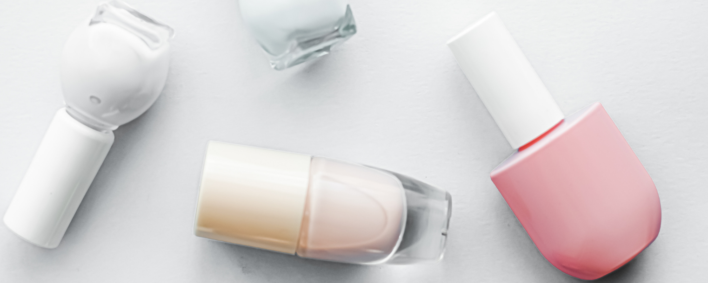

About Manicures
If you haven't done a manicure, you MUST read this article!
“A manicure is a mostly cosmetic beauty treatment for the fingernails and hands performed at home or in a nail salon. A manicure usually consists of filing and shaping the free edge of nails, pushing and clipping (with a cuticle pusher and cuticle nippers) any nonliving tissue (but limited to the cuticle and hangnails), treatments with various liquids, and the application of fingernail polish. When the same is applied to the toenails and feet, the treatment is referred to as a pedicure. Together, the treatments may be known as a mani-pedi. Most nail polish can stay on nails for 2-3 days before another manicure is required for maintenance, if there is no damage done to it.” , from Wikipedia. However, most of our gel manicures can stay for 2 weeks or maybe longer if you treat them in the right way. Manicures are like dyed hair or curly hair that you got from a hair salon. They will stay for a period of time. In order to let them stay longer, you need to take care of them. So, let's talk about how to make your gel manicure last?
- Apply cuticle oil to your nail beds every day.
- Do not file your nails unless absolutely necessary. If you need to, take care to file gently and always finish in a downward direction.
- Always wear gloves when doing general household cleaning and gardening, hobbies that are rough on your hands or use harsh chemical products.
- Avoid using your nails as tools to pull open or pick at anything.
- Take care not to use any products that could contain solvent oils, which causes major damage to the color. These oils can be found in certain sun tan oils and insect repellent (Deet).
- To avoid the color fading on holiday make sure you wash any chlorine off your hands after swimming and dry your nails before sunbathing.
- If any lifting occurs make sure you don't pick or pull at the nail. Call us so that we can assess the nail and decide if a repair is necessary.
- Before your next treatment be sure to book in a gel removal to ensure no damage occurs on the natural nail.